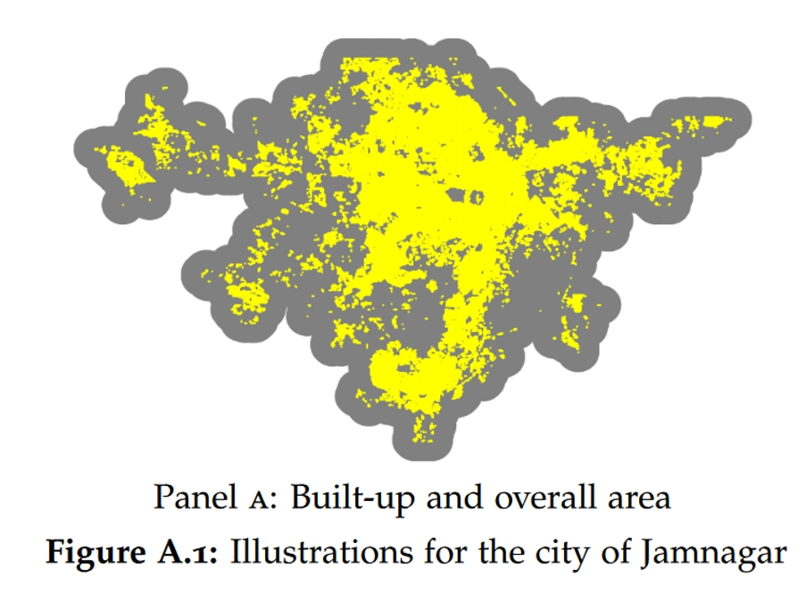
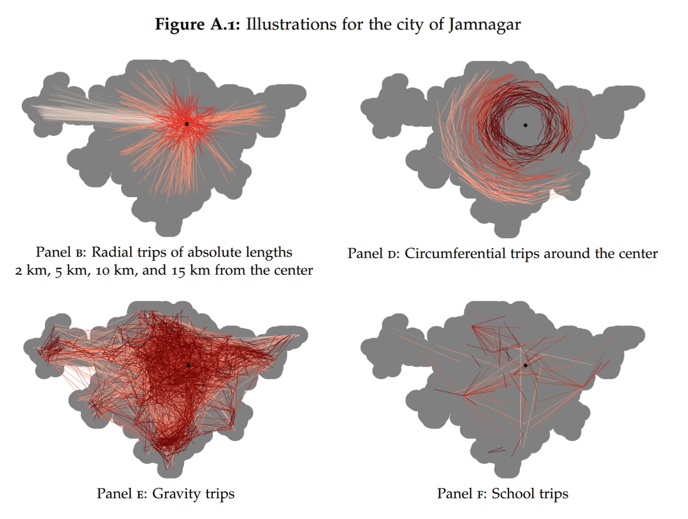
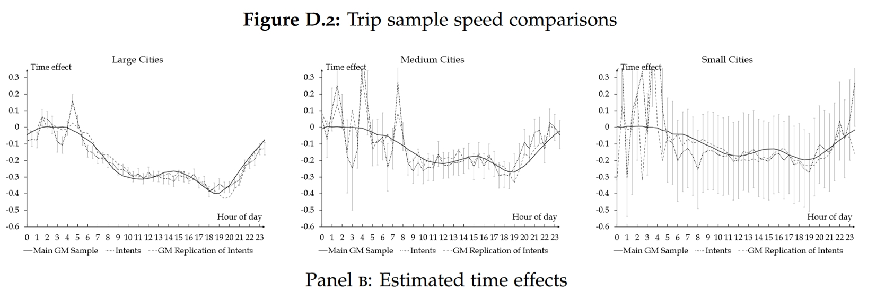
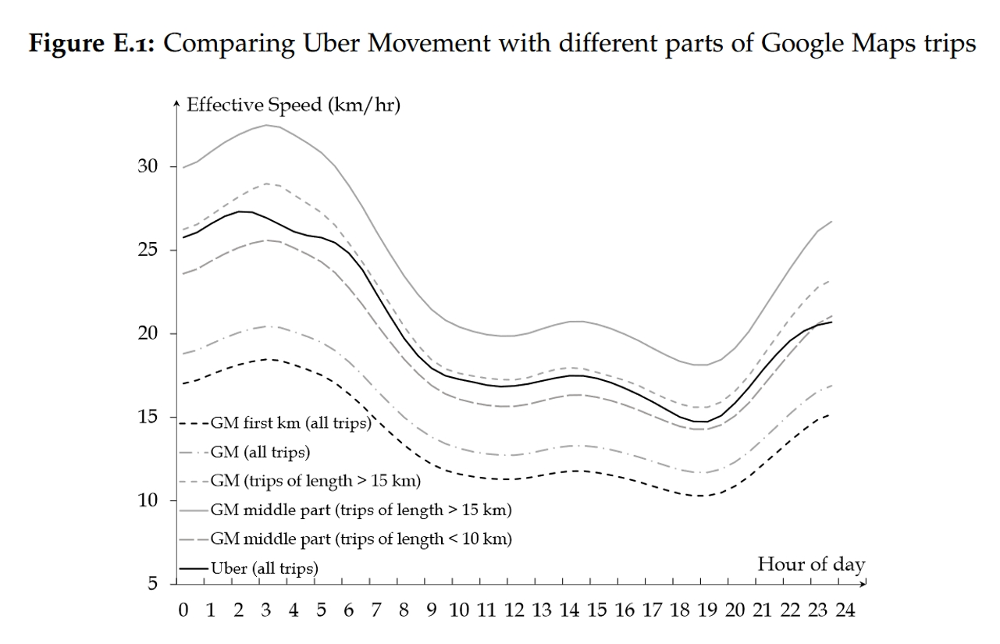
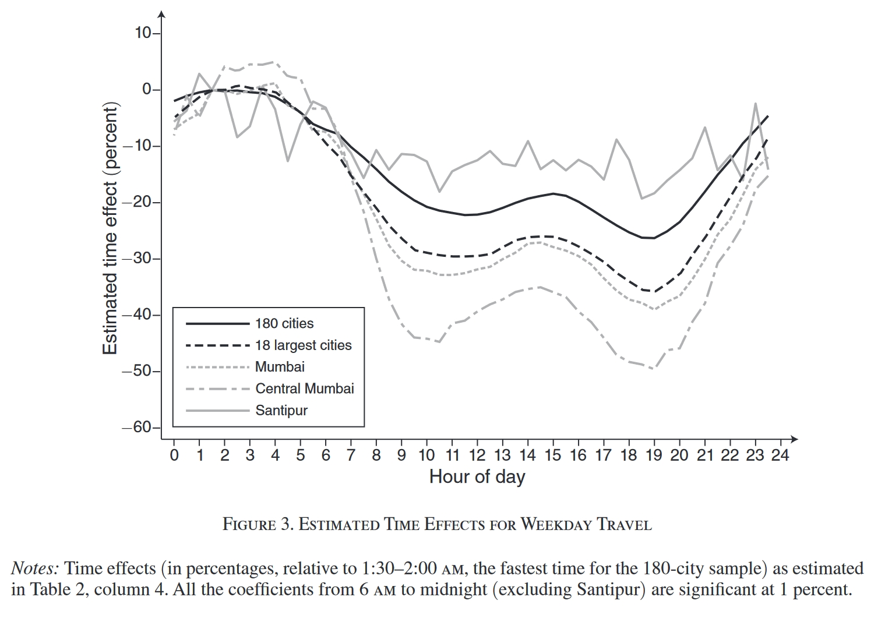
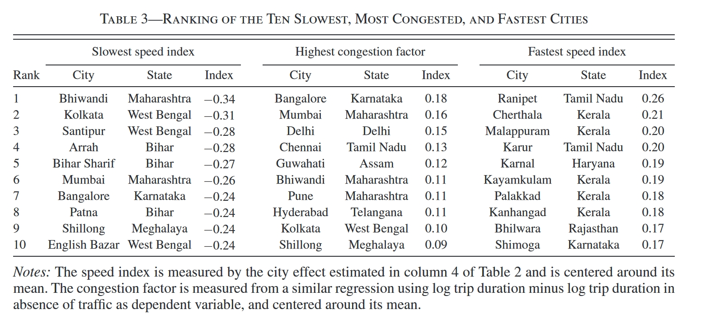
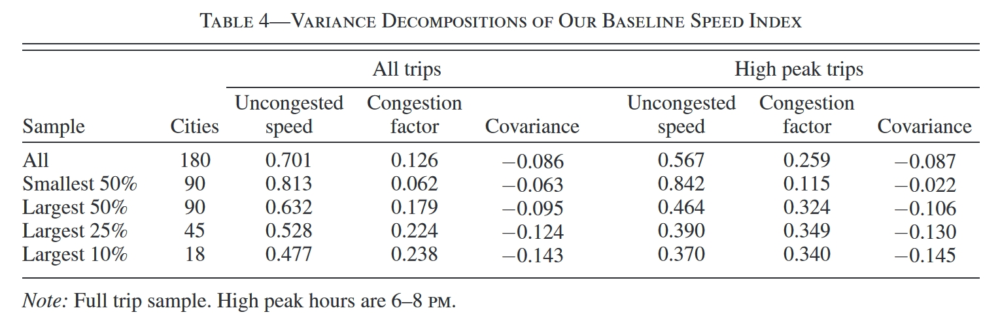
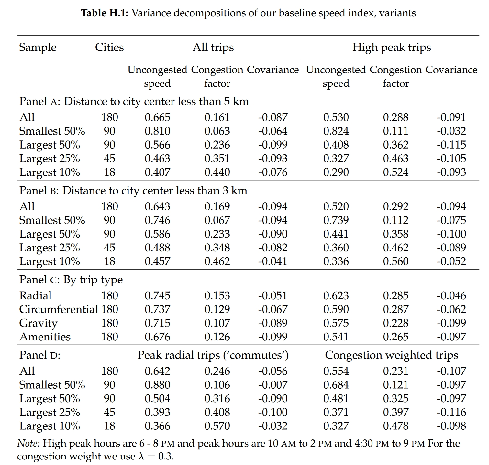
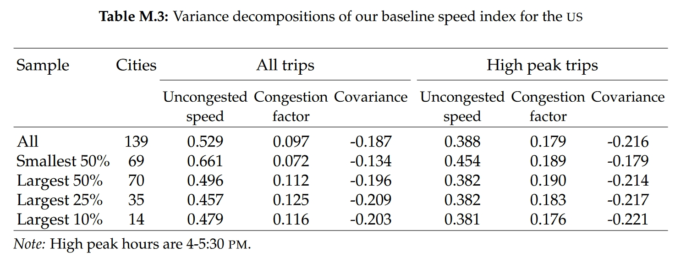

什么决定了城市间交通速度差异？
2024-08-30
Paper: Akbar, Prottoy, Victor Couture, Gilles Duranton, and Adam Storeygard, "Mobility and Congestion in Urban India," American Economic Review, 113 (2023), 1083–1111.
I co-wrote this introductory article with Qiujin CHEN.
I am going to have the honor of co-presenting this paper with Qiujin CHEN at the China's Economic Transition Workshop on October 8, 2024.
1. 问题何在？
过去二十年的城市经济学研究通常将城市视为一个整体，借助城市间的变异性讨论城市层面的变量间关系，比如城市的均衡规模、集聚外部性等等。随着数据的日益细化与识别技术的发展，越来越多的研究开始讨论城市内部的具体运作机制，城市这一黑箱得以逐步打开，近年来这样的研究不胜枚举。在本文中，作者尝试细致考察城市的交通系统，在这一方面，以往的研究至少有三个问题没有解决：
- 不准确或缺乏的出行数据： 我们对城市交通系统(尤其是发展中国家的交通系统)本身知之甚少。一些交通或出行相关的调查数据可以帮助我们了解有关家庭出行决策、交通成本以及城市的拥堵情况的信息，但一方面，调查数据不够准确，另一方面，大规模调查在发展中国家很难推行。
- 是什么决定了城市间的出行速度差异：一些流行的观点认为大城市相比其他城市而言更慢，因为城市的发展会导致拥堵，然而，这方面是缺乏经验证据支持或否认的。原因之一在于拥堵这一概念较为抽象，定义不明而难以衡量，导致我们难以量化拥堵在解释城市间速度差异上的重要性。另外，人们容易忽略一点，大城市更好的道路设施本身是有助于提高出行速度的(也就是说，如果我们能设想没有拥堵的情况，大城市的“无拥堵速度”应该更快)。即使我们不担心调查数据不准确的问题，我们也很难借助调查数据将拥堵与“无拥堵速度”这两种相反的力量分离出来。
- 如何提高一个城市的出行速度：对于发展中国家的政府而言，通过基础设施建设改善交通条件是重要任务。但是，我们依然不是很清楚什么因素决定了一个城市的出行速度，什么因素又主要导致了拥堵。
本文所做的正是为解决这三个问题寻找突破口。首先，作者放弃了调查数据，而是借助Google Maps在每个印度城市和美国城市内大量查询不同的出行路线，并获得一个估计的出行耗时。这一做法可以以低廉的成本获得巨量的出行数据，只要能够确保Google Maps对出行时间的估计是准确的，且作者查询的路线具有代表性。其次，Google Maps能够模拟不存在交通拥堵时的出行耗时，基于此，作者提出了一种方法，能够将一个城市的出行速度分解为“无拥堵速度”与一个“拥堵因子”。借助这一分解，作者发现了一个貌似反常识的结论：解释城市间出行速度差异的最关键因素并非拥堵程度的差异，而是“无拥堵速度”。最后，作者考察了出行速度、“无拥堵速度”以及拥堵程度与各种人口、地理、基础设施和经济发展变量之间的相关性，以此为发展中国家政府改善本国交通条件提供潜在的途径。
2. 数据
2.1. 划分城市并获取城市层面的数据
估计各城市出行速度差异的首要任务是界定各城市的范围。首先是确定城市，联合国2018年的“世界城市化展望(World Urbanization Prospects)”报告提供了印度181个超过300,000人口的城市的位置，在此基础上进行一些微操，作者得到了这181个城市的中心位置。
余下的任务是确定这181个城市的边界，为此作者需要两个额外的数据来源。其一，Global Human Settlements Layer的Settlement Model根据人们2014-2015年的居住模型对土地网格(1 km)进行分类，将其中一部分界定为城市土地。这些城市土地网格组成了的一个多边形，从而界定了一个初步的城市边界。其二，Global Human Settlement Layer在地图上将众多40米像素点中的一部分界定为“建成区(build-up)”像素点。在此基础上，作者在每个“建成区”像素点周围构建一个500米的范围(500-meter buffer)，并将完全落入这一范围的网格也算作城市网格。两个数据来源求并集，得到一个最终的城市边界。完成这些以后，作者剔除了1个网格分类数据明显存在错误的城市，一共用到印度的180个城市。下面Figure A.1的Panel A是Gujarat的一个中等城市Jamnagar的边界示意图，其中黄色点就是“建成区”像素点。

另外，作者根据2011年普查数据(2011 census)和2011-2012全国抽样调查数据(Employment and Unemployment Survey of the National Sample Survey 2011-2012)计算了各城市的人口、拥有交通工具(车或摩托)的家庭比例、路灯与道路存量、非农工人的平均通勤时间和家庭收入等变量；使用GeoFabrik提供的OpenStreetMap计算了各城市的道路网络形状、河流与海岸线的长度；从Meteostat获得天气数据；利用Google Maps和卫星数据计算道路的坡度(海拔变化)。
2.2. 行程数据
作者主要靠Google Maps来模拟给定行程路线的耗时：作者先设定好路线的起点和终点，并告诉Google Maps出行的时间和交通方式，就可以得到一个模拟的耗时(大家联系自己用国内类似app的经验应该就能理解)。也就是说，具体的行程是由研究者确定的，而非现实的行程。首先，我们需要定义两个重要概念：
- trip: 代表某个城市中的一个特定行程，也就是要确定起点和终点。(trip: "an ordered pair of points (origin and destination) within the same city.")
- trip instance: 代表某一个trip在特定时点的实例，也就是说，在确定行程之后，要进一步确定在哪一天哪一个时段出行，因此每一个trip都会有多个trip instances。(trip instance: "a trip taken at a specific time.")
对于城市$c$，作者一共模拟了$15\sqrt{Pop_c}$个trips，其中$Pop_c$代表城市$c$的2018年的预测人口规模，也就是人口越多的城市会模拟更多的行程路线。而对于每一个trip，作者计算了21个trip instances。因此，对于一个拥有100万人口的城市来说，作者会模拟15,000个trips(即确定7,500个“起点-终点”的配对，然后往返分别算作一个trip)以及315,000个trip instances。作者确保了每一个trip的起点和终点至少要距离1 km以上，以确保Google Maps能够更好地预测出行时间。
由于行程是研究者自己设计的，于是作者设定了四种行程类型，Figure A.1 Panels B, D, E和F的城市Jamnagar案例提供了四种类型的可视化描述：
- 径向行程(radial trips)：将城市中心1.5 km范围内的一个随机点与距离城市中心2/5/10/15 km范围的另一个随机点相连接。
- 圆周行程(Circumferential trips)：与径向行程垂直的行程，首先确定一个随机起点(于是得到它到市中心的半径)，然后寻找另一个半径相近的点作为终点，且要求起点与终点在极坐标上大约相差30°。
- 引力行程(Gravity trips)：首先随机确定一个起点及行程方向，然后从形状参数(shape parameter)为1的Pareto分布中抽取一个实现值作为距离，从而得到终点(Pareto分布的特点是，在临界值右边，越大的取值的概率密度越小，也就是更容易抽取出较小的距离)。这种行程类似于引力模型中所刻画的：如果两地越远，则有更强的bilateral resistance。
- 前往公共场所的行程(Amenity trips)：随机选择起点，然后将该城市中的一些公共场所(比如学校、娱乐场所、宗教场所等等，下图中Panel F以学校为例)作为终点。

2.3. Google Maps能准确模拟行程耗时吗？
在这一小节，作者提供了几个方面的证据表明Google Maps应该能较好地模拟一个特定trip instance的交通耗时，即使在小城市效果也能不错。
首先，Google Maps模拟行程时间依赖于安装了安卓系统或者其他安卓系统app的手机所上报的位置信息，于是我们可能会担心，如果在一些小城市手机还不够普及，或者人们有意识地拒绝上报位置信息，那么估计就会不准确。但这种担心可能是多余的，一方面，截至2017年，印度63%的城市居民拥有手机；另一方面，估计小范围的车流数据并不需要太多人拥有手机(理论上，要估计一个街区特定时刻的车流量，只需要当时有一个车主能够提供信息就足够了)。此外，作者发现，在晚高峰使用Google Maps模拟行程耗时，绝大多数时候，每间隔5分钟所模拟的耗时是会有所波动的，这表明Google Maps会实时更新交通情况。
此外，作者搜集了2019年6月至11月主要公共节假日和罢工的日期，并在这些日期估计出行速度，发现这些特殊时期的出行速度与平时工作日相比有显著的差别：在三分之二的节假日，通行速度会比工作日更快，接近于平时周末的速度(因为通勤减少了)；在Anant Chaturdashi假期间，Google Maps估计的速度与工作日很接近，因为这个节日只有公务员放假；在Ganesh Chaturthi festival期间通常有大型的庆祝游行，Google Maps估计的出行速度较平时更慢；罢工期间速度也会更慢一些。这些结果都是与现实一致的。
最后，作者将Google Maps模拟的行程耗时与现实数据进行对比。首先，作者使用了Intents Mobi(一个移动端app)开发者提供的数据。不过，由于Intents的数据较少，不足以对每个城市单独进行详细分析。作者的思路是，Intents中有详细的行程路线及其速度，于是作者可以在Google Maps上复制该行程，模拟其在同一天、同一时刻的耗时。完成模拟之后，作者将Intents的现实数据以及Google Maps的模拟数据加总到三类城市(大、中、小城市)，然后估计出各个时间段的平均速度(具体的计算方法见第3.2节，此处先不讨论)。根据Appendix Figure D.2可以发现，Intents的现实数据(灰色点线)和Google Maps的模拟数据(灰色虚线)非常接近。

作者还对比了Uber提供的现实行程数据。不过，Uber数据未必具有代表性，因为Uber将一个行程分成了若干区域，通过计算穿过特定区域的耗时来计算速度，因此这种估计方法主要反映了行程中间部分的速度，于是会更快一些。在Appendix Figure E.1中，Uber数据(黑色实线)所反映出的一天中不同时段的平均速度与Google Maps模拟出的速度具有一致的趋势；另外，作者指出，如果我们在用Google Maps模拟时也进行一些类似的选择(比如只取行程中间段，见灰色长虚线)，那么模拟得到的速度和Uber是比较接近的。

3. 衡量出行速度的方法
在常见的量化空间均衡模型中，刻画居民的出行(通勤)决策是相对复杂的。居民选择其住处与工作地点，进而确定其常规的出行路线，同时，居民还要选择是否购买交通工具(在本文的情境下，甚至还需要模拟居民出行时间的分布，因为不同时段的拥堵程度显然是不同的)。当空间均衡实现时，居民的空间分布得以确定，该城市典型的交通路线与出行时间也得以确定。这一套structural-form的研究思路确实能帮助我们更好地模拟现实，但是一旦把空间尺度缩小，尝试考察城市内更复杂的通勤问题，就会对理论和数据提出了巨大的挑战(intractable theoretical challenges and data requirements)。
在本文中，作者不打算内生地刻画居民的出行决策(因此也就不知道现实中哪些路线是更加典型的)，而是随机生成出行路线，并用Google Maps模拟这些出行路线的耗时。这样一来，作者确实不必去求解复杂的结构模型，但自然也有弊端：由于路线是由研究者随机生成的，我们很难确保它们具有代表性。换句话说，我们不知道怎么把这些模拟的路线加总起来，得到对某个城市的出行速度的总体评估。显然，如果一个路线是更常被使用的、或者某一个路线主要是在特定的时间段被使用，那么这些特定路线或特定时间段的出行速度应该在计算时具有更高的权重，但很遗憾，我们似乎不是特别清楚现实的情况。
好在，作者在缓解这个弊端上做了一些努力，比如作者后面会根据现实情况对模拟的出行路线进行加权，也会尝试在不同的子样本中讨论估计结果……但不管如何，作者发现不同的权重设置并不会显著改变一个城市估计出的平均出行速度，可能是因为，如果一个城市是slow的，那么这个城市的各种路线、同一路线的不同时间段基本上都是slow的。
作者把Google Maps估计的行程耗时作为出行成本的衡量，这么做确实忽略了一些其他的成本，比如油费、交通工具的折旧等等，但这些另外的成本通常与出行耗时是明显正相关的，因此即使没有正式刻画并估计它们，它们也由于与出行耗时的相关性而多少得到体现了(后面我们会看到，估计出来的各城市的出行速度实际上是一个相对指标，如果上述相关性不存在明显的城市间异质性，那么即使忽略它们也不会有大的影响)。
3.1. 衡量出行速度
给定我们已经获得了一个城市不同路线(trip)在不同时点上的估计(trip instance)，一个自然而然能想到的出行速度的衡量指标是：$$S_c^m = \frac{\sum_{i\in c}D_i}{\sum_{i \in c}T_i} \tag{1}$$其中$c$代表城市，$i$代表某一个trip instance，$D_i$代表某个trip instance的距离，$T_i$则代表其通勤时间。总之，这个指标就是把城市$c$中所有模拟出的trip instance的距离加总、时间加总，然后相除求出平均速度。
但问题在于，我们不能直接比较两个城市的$S_c^m$，因为在不同城市模拟出来的trips本身会存在系统性的差异，而这些抽样层面的系统性偏差又可能与交通速度有关。比如说，我们在一个总面积广阔但市中心相对较小的城市A中随机模拟，会得到很多远离市中心的trips；而在一个面积较小且市中心范围很大的城市B中随机模拟，则会得到很多靠近市中心的trips。假设在这两个城市中，通勤均主要发生在市中心附近。直觉上，靠近市中心的行程会更慢一些，那么由于模拟而产生的样本偏误会使得我们高估城市A的平均速度。
一种解决方法是在借助回归partial out这些行程层面的混淆因素：$$\log S_i = \alpha \textbf{X}_i' + s_{c(i)}^{fe} + \epsilon_i \tag{2}$$这里，$S_i = D_i / T_i$是每一个trip instance的速度，$\mathbf{X}_i$是每个trip instance的特征，$s_{c(i)}^{fe}$是trip instance所在城市的固定效应，最后$\epsilon_i$是一个误差项。于是，固定效应$s_{c(i)}^{fe}$就反映了城市$c$在剔除trip instance的系统性差异后平均出行速度。这里无需担心固定效应是否能被一致估计，因为随着样本量的增大，增加的是每一个城市内的instance的数量(换言之，估计每一个城市固定效应所用到的样本量是增大的)，而非通常担心的短面板设定。
再次强调，这里的trip并非真实的出行(not actual trips)，而是借助Google Maps模拟的出行(simulated trips)，这一做法有优势也有弊端。
- 优势： 路径的选择是外生的。如果用的是survey data，那么出行条件好(fast)的地方人们倾向于出行更远，这种选择性会导致估计的内生性。换句话说，一些instance层面的unobservable存在于$\epsilon_i$中且与$s_{c(i)}^{fe}$相关，这样会导致固定效应无法得到一致的估计。
- 弊端： 由于trip是研究者选择的，而不是现实的，因此用这种方式计算的速度可能和现实差异很大。比如说，现实中某些slow的trips被人们频繁使用，但是在研究者模拟的时候，这些trips可能没有进入估计。正如前面提到过的，不同simulated trips可能在权重上有差别，与现实更接近的trips应当被赋予更高的权重。
关于这里提到的“弊端”，作者提供了三个arguments：
- 作者在模拟时实际上有考虑如何与actual trips更加接近，而且后面估计的时候也会根据actual trips对simulated trips做加权。
- 后面我们会看到，在作者引入一系列trip instance层面的控制变量$\mathbf{X}_i$之后，其实出行路线的具体类型对出行速度的影响已经很小了。
- 作者利用了大量不同的specifications、不同的权重和子样本来估计城市层面的平均出行速度，还用了不同于Equation (2)的其他方法，得到的衡量指标的相关性是非常强的，表明不用太担心simulated trips的权重问题。
3.2. 分解出行速度：无拥堵速度和拥堵程度
实际上，Google Maps为作者提供了一个分解出行速度的方法，具体来说，出行速度可以被分解成两个组成部分：“自由通行”下的无拥堵速度(uncongested/"free flow" speed)以及一个拥堵因子(congestion factor)。具体操作如下：
- 根据第3.1节中的方法，在式(2)中用每一个trip instance的平均速度作为被解释变量，估计出固定效应$\hat{s}_c^{fe}$作为该城市的speed。
- 然后，用Google Maps，模拟没有交通拥堵的情况下的通勤时间，进而得到每个trip instance在没有交通拥堵情况下的平均速度：$S_i^{nt} = D_i / T_i^{nt}$，将这个平均速度(log)作为式(2)的被解释变量，估计得到固定效应$\hat{nt}_c^{fe}$就是该城市的无拥堵速度(uncongested speed)。
- 最后，把trip instance的真实耗时(log)和没有交通的情况下的耗时(log)相减，得到的就是拥堵导致的delay，即$\log T_i - \log T_i^{nt}$。把这个delay作为被解释变量，进入式(2)进行估计。估计得到的固定效应$\hat{f}_c^{fe}$代表城市$c$的由于拥堵而造成delay的倍数(因为计算时$T_i$和$T_i^{nt}$取了对数，因此这一项代表由于拥堵而使得真实耗时是无拥堵耗时的多少倍)，作者把它叫做拥堵因子(congestion factor)。在数学上可以比较容易地证明：$$\hat{f}_c^{fe} = \hat{nt}_c^{fe} - \hat{s}_c^{fe} \tag{3}$$
3.3. 衡量出行时间的不确定性
一趟行程在时间上的不确定性也是一种成本(比如说，人们会担心由于通勤时间的波动而导致上班迟到)，Google Maps提供的模拟正好能够估计时间的不确定性：作者他们在同一个工作日同一时间段(Recap: 一天以30min为区间被划分为24个时间段)以5分钟作为时间窗口计算同一个行程的通勤时间(也就是得到6个通勤时间)。
于是，对于每一个时间段，每个工作日都能得到6个通勤时间，这些通勤时间形成一个分布，作者用该分布的90%分位数和50%分位数之比作为这个行程在特定时间段上通勤时间的不确定性。用同样的方式代入(2)式的被解释变量进行回归，得到的固定效应就是该城市通勤不确定性的衡量。
4. 估计各城市的出行速度
前面已经说了，由于不同城市的行程路线是存在系统性差异的，因此直接加总路程和耗时计算出的平均速度在城市之间是不可比较的。于是，作者需要估计Equation (2)来控制行程路线的特征。作者首先考虑了一组benchmark controls：
- 路程长度： 更远的路程会更快，因为会行驶在允许更高速的公路上，因此作者控制了路程长度(log trip length)。
- 与市中心的距离： 更接近市中心的路程会更慢，因为有更多的拥堵，而且有更短的街区、更多的交叉路口和更窄的街道，因此作者控制了到市中心的平均距离(log distance to center)。
- 出发时间与日期： 出发时间(作者以30min分钟为区间进行划分)以及星期几(day of the week)也会影响通勤速度，因此作者控制了time和day的固定效应。
- 行程类型： 行程类型(demand for travel)以及道路的非出行用途(e.g., parking or retail)也会影响通勤速度，因此作者控制了行程类型：径向行程(作为基准)、圆周行程(Type: circumferential)、引力行程(Type: gravity)、前往公共场所的行程(Type: amenity)，这四种不同的行程类型，前面第2.2小节已经简要介绍过了。
- 天气： 天气显然会影响通勤速度，因此作者控制了weather的固定效应。
除了上述的benchmark controls，作者还考虑了额外添加一组extended controls，主要是一些道路沿途的城市特征：
- 上行的总坡度(Gross gradient up)和下行的总坡度(Gross gradient down)。
- 路程中行驶在高速公路(作为基准)、一级公路(Share primary roads)、二级公路(Share secondary roads)、三级公路(Share tertiary roads)、居民区道路(Share residential roads)和其他道路(Share other roads)的长度占比。
- 交叉路口的数量(log number of intersections)、转弯的数量(arsinh number of right turns)和途径的各类建筑的数量(arsinh number of establishments)。
需要强调的事情是，上面的两组控制变量是在尝试控制不同的东西，请大家时刻牢记，本文的样本是靠模拟出来的，换句话说，作者人为抽取了trip的出发点和终点，因此需要控制这个trip的一些影响估计的混淆因素，以避免估计结果是由抽样的偏差导致的。在benchmark controls中，作者所控制的都是抽样层面可变的因素，因为路途长度、与市中心距离、出发日期、出发类型、天气等等，都是作者在随机抽取特定trip的起点、终点或者trip instance的时段时能操纵的。但是，extended controls都是一些城市层面(外生于trip的抽取)的因素，本身是决定该城市出行速度的部分原因。
这样一来，我们可以这么理解：控制benchmark controls后估计出来的城市固定效应，是排除了抽样偏差后估计出的城市间出行速度差异(作者将这一固定效应称为"broad" fixed effects，即“广义的出行速度”)，这些控制是完全必要的；而一旦进一步控制extended controls，估计出的城市固定效应则是指，将部分影响出行速度的城市特征排除之后，余下的城市间出行速度差异(作者称之为"narrow" fixed effects，即“狭义的出行速度”)。作者偏向于使用广义的出行速度，因为这更加能够反映城市间的总体差异。

Table 2汇报了不同specifications下的估计结果，其中第(1)列只包含行程距离，第(2)列只使用了weekday的trip instance进行估计(第(2)-(7)列均如此)，第(3)列引入到市中心距离的控制变量，第(4)列对不同trip instance(也就是不同的出行时间)进行赋权，使其权重与现实的出行数据的时间分布一致(我们看到，第(3)(4)列的系数点估计值是很接近的，表明改变权重不会明显影响估计结果)。第(5)-(7)列进一步引入extended controls中的变量。
下面简要讨论一下Table 2所表明的影响一个trip instance出行速度的特征，都是十分符合直觉的结果，间接表明控制相对得当：
- 出行速度对行程长度的弹性为0.22，即路程越远，速度越快。
- 出行速度对市中心距离的弹性为0.08，即远离市中心的行程，速度越快。
- 不同出行类型的差异很大(见第(1)(2)列)，但是一旦控制了到市中心的距离，差异就会大大缩小(见(3)(4)列)，说明市中心的距离可能是导致不同行程类型差异的重要原因，另外，这表明由研究者随机设计的出行类型不会明显左右结果。
- 恶劣天气下速度会下降。
- 如果行程中有更多的上坡，速度会减慢；下坡的影响小很多。
- 在更宽阔的公路上行驶，速度会更快。
- 如果行程中有更多的十字路口和转弯，速度会减慢。
由于控制了Time effect，作者可以把不同时段的通勤速度分离出来(显然，不同城市的time effects也是可以估计出来的)，Figure 3展示了这一结果(以30min为时间区间，凌晨1:30-2:00作为参照)。显然，一天有两个通勤的高峰：早高峰和晚高峰，图中是清晰可见的。所有印度城市平均而言(黑实线)，与凌晨时较快的出行速度相比，一天中最慢的时段要慢大约25%；与早高峰相比，晚高峰会稍慢一些。这一规律在18个最大的城市中(黑色虚线)也是一致的，不过会更明显一些，最慢的时段要慢35%左右。如果看印度的第一大城市孟买(Mumbai，作者样本中第二拥堵的城市，灰色虚线)，这个规律更更明显；甚至如果只看孟买的市中心(灰色点虚线)，规律更更更明显。总之，作者表明了这个规律是具有普遍性的。当然，在通勤速度很慢且不发达的城市桑提浦(Santipur，灰色实线)，不同时间点的差异就相对没那么明显了。
BTW，作者在Appendix G里面讨论了不同specifications下或者不同子样本中计算出的城市固定效应，由此计算出的城市固定效应与正文中汇报的城市固定效应的相关系数很大，基本都达到了0.9左右，表明了估计的robustness。作者还使用了不同于Equation (2)的其他方法去衡量各城市的平均出行速度，结果依然相近的。

本文最关心的主要是城市间的差异，根据前面对Equation (2)的讨论，我们知道估计出来的城市固定效应就是各城市平均通勤速度的一个正向指标。作者指出，这一系列城市固定效应的标准差是0.116，速度最慢的城市比平均值慢 29%，而速度最快的城市比平均值快 30%。这么算来，最快的城市大约要比最慢的城市快83%，所以印度城市间的通勤速度差异是很大的。
Table 3从左到右三个panel分别是印度速度最慢的10个城市、拥堵程度最高的10个城市(Recap: 拥堵系数由各城市的平均通勤速度减去无拥堵速度得出，见Equation (3)，衡量了现实情形与完全没有拥堵的情形相比要慢多少)以及速度最快的10个城市。一些基本特征：
- 最慢的10个城市： 印度的前四大城市中有三个在其中，但同时，印度最贫穷的州Bihar也有三个城市在其中。
- 最快的10个城市： 基本上都是相对小的城市。
- 最拥堵的10个城市： 印度前十大城市中有七个在其中。

最后，作者估计了各城市通勤时间的不稳定性。平均而言，在工作日的通勤高峰期(傍晚18:00-20:00)，模拟出的通勤时间的90%分位数要比50%分位数慢6%左右(即不确定性指数(unreliability indices)为6%)。大城市的不确定性更强，人口最多的前10%的城市的不确定性指数平均为8%。拥堵指数和不确定性指数的相关性为0.89，表明通勤时间的不确定性主要是由拥堵造成的。
5. 速度的分解：无拥堵速度与拥堵程度
5.1. 方差分解：何者起主导作用？
关于每个城市的平均出行速度，我们现在有三个指标：平均速度($\hat{s}_c^{fe}$)、无拥堵速度($\hat{nt}_c^{fe}$)以及拥堵指数($\hat{f}_c^{fe}$)。前面说了，数学上可以证明：$$\hat{f}_c^{fe} = \hat{nt}_c^{fe} - \hat{s}_c^{fe}$$于是有：$$\text{Var}\left[\hat{s}_c^{fe}\right] = \text{Var}\left[\hat{nt}_c^{fe}\right] + \text{Var}\left[\hat{f}_c^{fe}\right] - 2\cdot\text{Cov}\left(\hat{nt}_c^{fe}, \hat{f}_c^{fe}\right)$$也就是说，我们可以把印度不同城市出行速度的差异分解为三个部分：城市间无拥堵速度的差异、城市间拥堵指数的差异以及无拥堵速度与拥堵指数的相关性。
Table 4汇报了这一结果。第一行是全样本，即180个印度城市。根据分解，城市间无拥堵速度的差异能够解释城市间平均速度差异的70%左右，而拥堵程度的差异仅能解释13%。当然，我们必须考虑到一天中有很多时段其实是不拥堵的，因此在这些时段，城市间拥堵程度的差异自然无法解释城市间平均速度的差异。于是，作者只用晚高峰(傍晚18:00-20:00)的数据来计算各城市的平均速度，但尽管如此，城市间无拥堵速度的差异依然解释了56.7%的平均速度差异，拥堵程度的差异能够解释25.9%。
如果我们只聚焦于小城市(即Samllest 50%的子样本)，那么无拥堵速度的差异能解释更大的份额(81.3%或84.2%)，这很好理解，因为小城市通常不会有太多拥堵。
如果我们只关心一些大城市(比如Largest 10%的子样本)，在这些大城市中，拥堵是非常普遍的，但是尽管如此，无拥堵速度的差异能够解释的份额(47.7%或37%)依然要大于拥堵程度的差异能解释的份额(23.8%或34%)。

作者在Appendix Table H.1中汇报了更多不同子样本的分解结果，其中最极端的结果是：如果我们只考察Largest 10%的城市，而且只关心距离市中心5km以内且在晚高峰的trip instance(这显然放大了拥堵的作用)，此时无拥堵速度的差异能解释29%的差异，拥堵程度的差异能解释52.4%。在作者提供的所有估计中，这是无拥堵速度差异的解释份额最小的子样本，但尽管如此，29%的份额依然是相当可观的数字。
总结一下，直觉上，我们总认为城市间出行速度的差异主要是因为有的城市人多、交通堵，但这里的结果反而告诉我们，城市间出行速度的差异并不主要来源于拥堵程度的差异，而是来源于无拥堵时的速度差异。

5.2. 提高无拥堵速度或减少拥堵的福利含义
下面作者简要讨论了提高无拥堵速度或者减少拥堵的福利含义。显然，讨论福利含义需要考虑两者的相关性，如果提高无拥堵速度会以提高拥堵为代价，那么就会成为一个trade-off。然而数据告诉我们(见Table 4)，无拥堵速度与拥堵程度之间呈现的是负相关性，换句话说，提高无拥堵速度并没有明显的挤出效应。
于是我们干脆假设提高无拥堵速度不影响拥堵程度，这样一来我们可以在不用考虑拥堵程度的情况下，计算提高无拥堵速度节约了多少时间。根据估计，无拥堵速度每提高一个标准差(即提高10%)，则能节省10%的时间。
相比之下，根据Akbar and Duranton (2018)以及Kreindler (2018)的研究，引入“拥堵费(congestion pricing)”得到的福利改善不及通勤成本的1%。当然，引入“拥堵费”的福利改善在大城市会更明显，比如说，根据Yang et al. (2020, AEJ: EP)的估计(他们利用北京的限号政策来构建IV，估计车流密度与通勤速度的关系，从而得到他们结构模型中的一个重要参数)，引入最优拥堵费能够使得北京市中心的交通速度提高11%。不过，即使在这种非典型案例中，其收益也仅仅与提高无拥堵速度的一个标准差相当。
6. 什么因素会影响一个城市的出行速度？
下面作者开始考察什么因素会影响一个城市的出行速度。根据上一节提供的福利含义，我们更需要关心什么因素影响了无拥堵速度，而且尤其需要关心那些具有明显政策含义的因素。作者主要考察了三个方面的因素：
- 人口与地形： 密度更大、更紧凑的城市可能更慢；不平坦或迂回的道路、更多的水体(因为车辆往往只能在有限的桥梁上行驶)也会限制交通速度。
- 交通基础设施： 更多的主干道、更宽敞的公路、更好的照明条件、规划更好的交通网络，这些交通基础设施均能影响一个城市的出行速度。
- 城市的经济发展： 富裕的城市还能通过改善基础设施以外的其他方式改善交通；但另一方面，发达的城市也可能有更多的车辆和人口，反而加剧拥堵。
Table 5汇报了估计的结果，主要结论如下(请切记，尽管此处我们似乎以因果关系的表述来解释这些变量间关系，但实际上表格呈现的只是相关关系，比如说，所有的基础设施变量、经济变量本身可能是地理因素的下游变量)：
- 通勤速度对于人口规模(实际上是密度，因为conditional on log area)的弹性为-0.15，对于城市面积的弹性则为0.17。这两者的大小几乎抵消，换句话说，如果城市人口与面积同时扩大，则对于通勤速度的影响很小。
- 城市的人口与面积主要是通过影响无拥堵速度来影响总体速度的，这与前面方差分解得到的结论一致。也就是说，人口密度增加减慢通勤速度并非主要是由于人多导致拥堵，而是因为人多则需要更短的街区、较窄的道路、更普遍的交通信号等，这些因素影响了无拥堵速度。
- 通勤速度对于坡度(用地图上不同点的海拔的方差衡量)与水体(用地图上河流中心线、海岸线和湖岸的长度衡量)的弹性也是负的，而且主要是影响无拥堵速度，这些因素也会加剧拥堵。
- 更多的主干道通过提高城市的无拥堵速度来提高平均速度，但更多的主干道并没有减少拥堵，因为更多的主干道会同时吸引更多的通勤，于是我们看到其对拥挤程度的影响是不显著的。
- 路灯数量越多、道路系统越接近网格状(根据道路朝向构建的一个指标)，则城市的通勤速度会更快。
- 收入对通勤速度的影响呈现出非线性，在对平均通勤速度的影响上呈现出“倒U型”关系。有趣的是，这种非线性关系在无拥堵速度与拥堵程度上均存在，但方向不同。收入与无拥堵速度的关系是“倒U型”的(但二次函数的转折点很大，几乎可以视为两者是正向关系)，而收入与拥堵程度的关系则是“U型的”，即当收入达到一定程度时，收入的提高会加剧拥堵。也就是说，随着收入的提高，一个地方的道路条件之类的会变好，从而提高无拥堵速度，但是居民可能会更多地购买汽车，从而也使得城市变得更加拥堵，两者是相互冲突的力量。

此外，作者还讨论了这三类变量的相对重要性：
- 在full specification中(即第(3)列)，R²是0.64，如果剔除收入变量，对R²的影响微乎其微(即第(2)列，R²由0.64下降为0.62)；但如果剔除人口变量(log population)， 则R²迅速下降为0.23；剔除三个道路变量(log major roads, log street lights和Network)或剔除地理变量(log area, Elevation variance和Water length)均得到大约0.51的R²。因此表明，人口变量是解释城市通勤速度的最重要因素。
- 类似地，在无拥堵速度的决定因素中，人口依然是最重要的因素，剔除后R²从0.6迅速下降至0.21。对于拥堵程度而言，各类因素影响的作用相对均匀一些，剔除后R²分别下降至：人口变量0.39，地理变量0.43，收入变量0.44，道路变量0.5(也就是说，建设道路本身几乎不会缓解拥挤)。
作者在Appendix Table I.1中还展示了一些额外的但仍未得到明确解释的相关性(Again，这里依然用了类似于因果关系的表述，但事实未必如此)：
- 一个城市如果过往(1990-2018)有更多的人口增长(Pop. growth 90-18)，则会提高无拥堵速度，但同时会加剧拥堵，因此对通勤速度的总体影响很小。
- 一个城市的居民如果有更多的汽车(Share w. car)，那么会加剧拥堵；但在conditional on汽车的情况下，增加摩托车的数量(Share w. motorcycle)反而能减少拥堵。尽管摩托车更小巧，但是得到一个负向的相关性依然是耐人寻味的，作者指出可能还需要更准确的因果研究。
- 一个城市的人口分布更加集中(即Spatial Gini pop.更大，这是一个类基尼系数的空间指标)，则无拥堵速度会减慢，但拥挤也会减少，从而对平均通勤速度没有影响。这意味着，一个城市的空间规划(进而影响人口分布)对于交通而言是重要的，这也还需要进一步的研究。
.png)
7. 拓展：步行、公共交通以及与美国的比较
7.1. 步行与公交
前文讨论的出行时间主要是考虑了私人交通工具的情形，印度的确有大约一半的家庭有私人交通工具(汽车或摩托，后者更多)，但依然还有许多人出行时依靠步行或公共交通，这一小节讨论这两种出行方式。这两种出行方式的出行时间的模拟方法和前面是一样的：在Google Maps中设定路线，选择对应的出行方式，然后模拟通勤时间。稍有差别的是，步行和公交不太可能因为星期几的差异或者一天中不同时间的差异而有所区别：步行是显而易见的，公交主要是因为Google Maps不会实时更新当地的公交情况，而只能根据交通部门提供的固定发车时刻表来计算。所以对于每一个trip而言，不必大量模拟不同的trip instance。
除了地形本身的限制以外，无拥堵的步行速度不太容易受到其他因素的影响，拥堵对于步行而言也不是重要的限制。所以我们自然预期城市间的步行速度差异会很小，结果也确实如此：在步行条件下计算的城市固定效应的标准差只有0.02，如果剔除掉一个山区地区，则标准差为0.008(Recap: 驾车出行条件下的城市固定效应的标准差约为0.116)。坡度的差异能够解释城市间步行速度差异的76%。
正如前面提到的，公交数据有两个局限：一是Google Maps只能按照固定时间表来计算时间，无法反映实时的公交系统，二是Google Maps只包含了官方的运输。根据这些有一定局限的数据估计出的结果，在使用公交条件下估计出的通勤耗时大约是驾车出行的2.9倍。此外，公交的速度具有更强的城市间差异，其城市固定效应的标准差达到了驾车出行的标准差的大约2倍。需要提醒大家的是，与私人驾车出行不同，公交的平均通勤速度还取决于公交的覆盖范围、频率与公交路线，甚至相比起公交自身的速度，这些因素可能最重要的。因此关于城市间公共交通速度差异的问题，还会更加复杂一些。
7.2. 和美国的比较
最后，作者用美国的数据重复了前面的分析。与印度相比，美国不同城市间通勤速度的差异更小一些。即使在美国，解释城市间通勤速度差异的主要因素依然是无拥堵速度的差异，而非拥堵程度的差异(见Table M.3)。

影响美国城市通勤速度的因素与印度大致相当，因此此处不再赘述，不过作者指出有三个方面稍有不同：
- 美国城市的通勤速度对人口规模的弹性要小一些(-0.11)，但是解释力更强(即从full specification中去除后，R²下降的更大)。
- 地理因素的解释力相对弱一些，可能反映出美国的交通网络缓解了地理因素对出行的限制。
- 道路交通网络对美国通勤速度的影响程度也相对弱一些， 可能体现出在比较完善的城市交通系统下，进一步改善交通网络的边际效益减小了。
.png)
8. 总结与政策启发
本文提供了一种比较城市间通勤速度的新方法，这种新方法能够将通勤速度分解为无拥堵速度与拥堵系数，在此基础上作者发现，无论在印度还是美国，解释城市间通勤速度差异的关键因素在于无拥堵速度的差异，而非我们通常认为的拥堵程度的差异。当然，如果只看市中心的话，拥堵程度的重要性会提高一些，但无拥堵速度的差异依然是重要原因。
在后续的相关性分析中，本文发现了人口密度是解释城市通勤速度的主要因素，人口密度越大，无拥堵速度更慢，而且拥堵程度也更高。其他的自然因素、交通基础设施因素以及经济发展因素也均有一定的解释力。有一点是很重要的，本文发现交通基础设施的建设与城市的发展能够提高通勤速度：交通基础设施一方面提高了无拥堵速度，另一方面没有明显加剧拥堵(在印度，更多的道路对拥堵的缓解效应可能被更多的出行所抵消；不过在美国，建设基础设施能甚至能稍微减少拥堵)；此外，收入较高的城市虽然会更拥堵一些，但是其道路条件等等也会更好，从而提高无拥堵速度(尽管速度与收入似乎呈现出“倒U型”关系)。这些结论与我们通常认为“城市发展往往导致交通瘫痪”的观点是不太一致的。通过提高发展中国家的无拥堵速度，执政者可以明显提高居民总体福利。
作者指出本文有三个政策含义：
- 对拥堵问题的关注应集中在最大城市的中心，因为在其他地方，通勤速度的差异主要是由无拥堵速度的差异造成的。
- 与美国城市的比较表明，尽管印度城市与美国城市通勤速度具有类似的影响因素，但不同因素的影响与解释力存在差异性。因此，有必要制定针对具体国家的政策，使用本文提出的方法对其他国家进行单独研究可能会发现独特的规律。
- 在大多数印度城市，出行速度在任何时候都很慢(不止是在高峰期)。拥堵定价、高乘员车辆专用道或其他类型的出行限制，可能对改善交通的作用不大。因此，研究人员未来应该聚焦于研究提高无拥堵速度的政策和投资。比如说，网格状的交通网络貌似与更高的无拥堵速度相关联，因此改善城市规划可能是一个努力的方向。